Из датских композиторов, выдвинувшихся в последней четверти XIX века, особо следует отметить И. Иесперсена, добившегося наиболее значительных успехов и продолжавшего активно работать до самой смерти. В 1903 г. он опубликовал свою 2000-ю задачу.
Иесперсен работал в стиле немецкой школы и считался одним из последователей венской группы проблемистов.
Пример № 000 интересен по построению и содержит два идейных варианта с отвлечением черных фигур.
№ 000
И. Иесперсен «Саусерн трейдс газетт». 1883 г . II приз
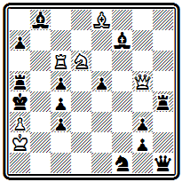
Мат в 3 хода
После 1. Ф h 5 с угрозами 2. Ф d 1+ и 2. Ла6+ черные должны защищаться взятием ферзя. Особенно красив вариант 1... С: h 5, в котором после 2. К b 5 Кр: b 5 используется критически и характер хода слона, позволяющий белым выключить его от батареи: 3. Л g 6#, на 2... Л: b 5 матует 3 . Ла 6#, грозит 3. К:с 3#. При взятии ферзя ладьей используется ее отвлечение от поля е4: 1... Л: h 5 2. Ке4 и 3. К:с 3#. Последний мат — чистый, правильных матов нет.
В дальнейшем Иесперсен совершенствует свою технику и в главных вариантах добивается осуществления правильных матов.
Задача № 000 содержит комбинацию, над которой особенно много работал Прадинья:
№ 000
И. Иесперсен «Манчестер уикли таймс», 1898 г.
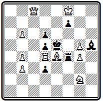
Мат в 3 хода
1. Фа6 Л:е4 2. Фа8 Л: d 4 3. Фе8# или 2... Кр: d 4 3. Фа1#. Белая ладья жертвуется на соседнем с королем поле, и при ее взятиях получаются два правильных мата. Дополнительные варианты: 1... Кр: d 4 2. Ф: d 3+; 1... Кре6 2. Ф b 7; 1... de 2. Фс4; 1... ~ 2. Л: d5 +.
Подъем задачной композиции в Италии относится к концу 70-х годов. Первая попытка выпуска шахматного журнала была предпринята в 1859 г., но вскоре он прекратил существование. С 1875 г. начинает выходить «Нуова ривиста дель скакки», издающийся до 1903 г. Этот орган сыграл значительную роль в развитии задачной композиции в Италии, им, в частности, были организованы первые итальянские конкурсы.
Возглавлял развитие итальянской композиции известный мастер Д. Валле, который уже в 1878 г. опубликовал сборник 100 своих избранных задач (45). В 1891 г. он же выпустил работу по истории и теории композиции «Искусство построения шахматных задач» (46). В этой книге обстоятельно излагаются основные принципы задачной композиции. Автор различает необходимые, обязательные качества задачи, относя к их числу идейность, трудность, единственность ходов, отсутствие неиспользованных сил, возможность позиции и свободные, добровольно вводимые качества, как, например, оригинальность, характер ходов, матовых позиций, экономия, богатство вариантов и т. д.
Отдельная часть посвящена характеристике стилей, сложившихся в задачной композиции.
Из произведений самого Валле мы приведем два, отмеченных высокими отличиями на итальянских конкурсах. В задаче № 000 вступлением
№ 000
Д. Валле «Нуова ривиста дель скакки», 1880 г. II приз
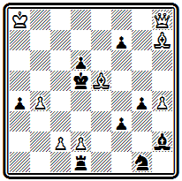
Мат в 3 хода
1. Ф f 8 жертвуется слон и создается угроза 2. Ф: d 6+. Тихий ход следует на взятие слона пешкой: 1... de 2. Cf 5 с правильным матом после 2... Крс6 3. Фс5#. Взятие королем приводит к двум правильным матам: 1... Кр:е5 2. Фе7+ Kpf 4 3. Ф: d 6 # или 2... Kpd 5 3. Фе4#. Четвертый правильный мат получается при взятии слоном 1... С:е5 2. Ф: f 7+ Kpd 4 3. c 3#.
Сложная идея расчистки линий для ферзя представлена в примере № 000.
№ 000
Д. Валле «Нуова ривиста дель скакки», 1893 г. I приз
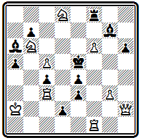
Мат в 4 хода
Вступление 1. Ф h 1 создает угрозу вскрытия позиции короля посредством жертвы ферзя 2. Ф:е4 + Кр:е4 3. Л f 4+ Кре5 4. Л:е 3#. Если 1... d 1 K, защищая поле е3, то используется открытие вертикали «d» и жертвуется ладья: 2. Л f 5 + Кр: f 5 3. Ф h 5 + или 2... Kpd 4 3. Ф: d 1+ Главный вариант получается при 1... Л: f 6; белые, используя блокирование поля f6, могут, пожертвовав уже обе ладьи, расчистить путь для мата ферзем с поля a1: 2. Лd 3 cd 3. Л f 5 + Л: f 5 4. Фа1 # или 3... Кр: f5 4. Ф h 5 #. Оба мата чистые, а первый и экономичный. После 2. Лd3 грозит мат 3. Лd5# , на 2... Л: f 1 проходит другая угроза 3. Ф h 5 +
Основные сведения о развитии композиции в Венгрии можно найти в кратком историческом очерке, помещенном в антологии, изданной в 1939 г. (47). Первый период развития венгерской задачи охватывает 1840—1872 гг. К ведущим проблемистам этого времени принадлежат И. Сен — пионер венгерской композиции, являвшийся также выдающимся мастером и теоретиком шахматной игры, Я. Вес, Я. Сирмай, Д. Пап.
Понграч был одним из победителей Бристольского конкурса 1861 г.
Его задача № 000 из посылки, получившей там III приз, содержит интересную позицию цугцванга в главном варианте.
№ 000
А. Понграч Бристольский конкурс, 1861 г. III приз
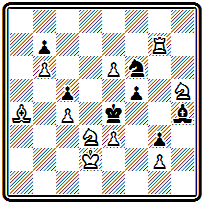
Мат в 3 хода
Ход 1. Се8 создает угрозу 2. Л g 4+ fg 3. Cg 6#. На взятие слона конем 1... К:е8 следует эффектный ход ладьи, перекрывающий слона, - 2. Л g 5, после чего черные оказываются в цугцванге.
В примере № 000 серия тихих ходов приводит к сложной позиции цугцванга:
№ 000
И. Сирмай Парижский конкурс, 1867 г.
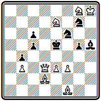
Мат в 5 ходов
1. Кс8 (с угрозой 2. Ф d 6+ Kpf 5 3. Ке7#) 1... Kf 5 2. Kh 6 (грозит мат ферзем на f5) 2... Cg 6 3. Ф d 7, и черные в цугцванге. На взятие ферзя 3... К: d 7 решает 4. Kg 4+ Kpe 6( d 5) 5. Сс4#; другие варианты: 3... с4 4. С:с4; 3... g 4 4. f 4+; 3... К: h 6 4. Ф d 6+ и т. д. Если 1... C : f 3, то 2. Ф d 6 + Kpf 5 3. Ке7+ Кре4 4. К: f 6 # . Но здесь есть простой мат в 4 хода - 1. К:c6+ Крe6 2. Кd8+ Крe5 3. f4+ gf 4. ef# Требуется исправление задачи.
Остроумный маневр белого короля осуществляется в композиции № 000:
№ 000
Д. Пап «Остеррейхише шахцейтунг». 1872 г.
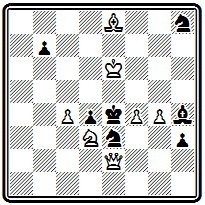
Мат в 4 хода
1. Kpd 7 h 2 2. Крс8 и либо 2... h 1К 3. Кр: b 7 и 4. Сс 6# , либо 2... h1 Ф 3. Cd 7 и 4. С f 5 # .
Ко второму периоду авторы очерка относят годы 1872—1896. Начинают выходить первые венгерские шахматные издания «Будапешти шакксемле» (1889—1895 гг.) и «Мадьяр шаккуйшаг» (1897 г.). На этот период приходится творчество С. Гольда, выпустившего в 1883 г. сборник 200 своих задач (48), Д. Сабо, А. Хуберта, Э. Шустера. Значительных конкурсных успехов добился выдвинувшийся в начале 80-х годов М. Эренштейн.
В примере № 000 последовательной жертвой трех фигур белые добиваются замуровывания коня g4, после чего осуществляют решающий маневр слона:
№ 000
Д. Сабо «Дейче шахцейтунг», 1887 г.
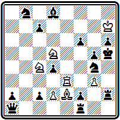
Мат в 5 ходов
1. Ле5 (с угрозой 2. К f 4#) 1... fe 2. Ксе 3 de (2... ~ 3. С: g 4 # ; 2... Л h 4 3. Kf 5 и 4. Kg 7 # ) 3. Kf 6+ С: f 6 4. Сс4 и 5. С f 7 # .
Задача № 000 выделяется хорошим вступлением
№ 000
М. Эренштейн «Мюнхенер нейесте нахрихтен», 1889 г. II приз
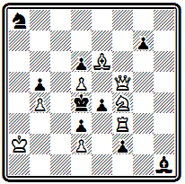
Мат в 3 хода
1. Ф h 7, удаляющим ферзя от поля боя, и красивым главным вариантом с выключением этого ферзя и далеким фронтальным правильным матом: 1... е f (блокируя поле f3, что дальше используют белые) 2. Kg6 ~ 3. Ф h 4 #. В другом разветвлении сначала ферзь возвращается в игру 1... е3 2. Ф: d 3+, а ход конем является матующим: 2... Кре5 3. Kg 6#. Угроза 2. Ф: g 7+.
Задача № 000 содержит три варианта, заканчивающихся правильными матами.
№ 000
М. Эренштейн «Пешти хирлап», 1900г. I приз
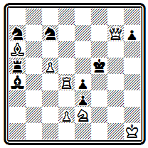
Мат в 3 хода
Хороший первый ход 1. Л d 3, освобождающий поле для коня, создает угрозу, которая при 1... Л:а6 заканчивается правильным матом 2. Kd 4+ Kpf 4 3. de #. На 1... Кре6 следует тот же ответ с другим правильным матом: 2. Kd 4+ Kpd 5 3. Фg5#. Взятие ладьи 1... ed 3 парируется ходом слона 2. С: d 3+ Kpe 6 3. Kf 4#. Дополнительные варианты 1... Kd 5(е6) 2. Лd5+ и 1... Ка b 5(с6) 2. Сс8+.
В последнем случае используется перекрытие черного слона.
Шахматная композиция в Швейцарии в XIX веке развивалась в основном усилиями ее энтузиаста, активного проблемиста Ф. Капрэца. Швейцарские композиторы мало выступали на конкурсах и почти не завоевывали на них отличий. В 1857—1860 гг. выходил журнал «Швейцерише шахцейтунг», который позднее, в 1900 г., был восстановлен как орган национальной шахматной федерации, созданной в 1889 г. Сборник задач швейцарских проблемистов, составленный М. Геннебергером, был выпущен в уайтовской серии в 1921 г. под названием «Альпийские шахматы» (49).
Капрэца относится к раннему периоду развития современной задачи и по кругу идей близко к работам Эрлена, Тертона и других пионеров середины века. Замысел композиции № 000 навеян «индийской задачей» и содержит в главном варианте обходный маневр слона по боковой линии, переходящего за критическое поле d2 с последующим матом на вскрышку:
№ 000
Ф. Капрэц «Лейпцигер иллюстрирте цейтунг», 1855 г.
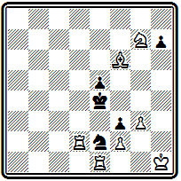
Мат в 5 ходов
1. Се7 h 6 2. Са3 h 5 3. Cc 1 h 4 4. gh Kpf 4 5. Л d 4 #. Дополнительный вариант 1... h 5 2. Cg 5 h 4 3. g 4 h 3 4. Kf 5 и 5. Kd 6 # .
Другой выдающийся швейцарский проблемист И. Юхли был близок по стилю к немецкой школе. В примере № 000 после
№ 000
И. Юхли «Академише монатсхефг». 1891 г.
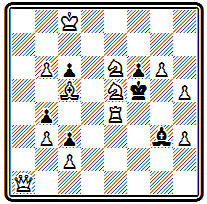
Мат в 3 хода
1. К:с6 черные в цугцванге. Главный вариант 1... Се5 содержит красивый ход ферзем в засаду за белого коня 2. Фа8 и правильный мат со связкой черного слона после 2... Кр:е6 3. Kd 4#. Другие варианты 1... Ch 2 2. Ф f 1+; 1… Кр:е4, Ce1 ( h 4) 2. Ф d1 .
Первые задачи финских композиторов были напечатаны в 1890 г. Тогда же Хельсинкским шахматным клубом, основанным за четыре года до того, был проведен первый конкурс составления задач. Лучшая трехходовка этого конкурса приведена на диаграмме № 000.
№ 000
И. Эквист Конкурс Хельсинского шахматного клуба, 1890 г. Приз
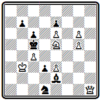
Мат в 3 хода
После 1. Ф h 8 грозит 2. Kd 7+. В вариантах 1... Кр b 6 2. Kd 7+ Kpa 7 3. Фа1 # и 1... Kpd 6 2. К f 7 + Кр:е 6 3. Фс8 # проходят два неплохих правильных мата.
Автор этой задачи И. Эквист был наиболее активным финским композитором конца века. В 1890 г. он предпринимал попытку издания шахматного журнала. По его предложению в русском «Шахматном журнале» в 1893 г. был проведен тематический конкурс на тему взятия на проходе. Значительных успехов финские композиторы добились уже в XX веке. В 1934 г. очередным выпуском уайтовской серии вышел сборник задач финских проблемистов под названием «Суоми» (50).
Отдельные испанские композиторы начали выступать в 60—70-х годах. Первых конкурсных успехов добился А. Абела.
Его задача № 000 содержит любопытный вступительный ход
№ 000
А. Абела «Нуова ревиста дель скакки», 1877 г. III приз
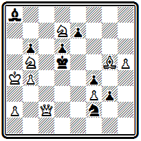
Мат в 3 хода
1. Ch 4, создающий позицию цугцванга, и два варианта с пожертвованием ферзя: 1... Кре6 2. Ф f 5+ Кр: f 5 3. Kd 4# и 1 ... Kd 3 2. Фс4+ Кр:с4 3. К: b 6#. Дополнительные варианты: 1... е6 2. Кр b 3; 1... е5 2. К: b 6+; 1... С b 7 2. Ф b3+
В 1892 г. испанский проблемист и теоретик X. Толоса-и-Каррерас выступил с большим руководством по шахматной композиции (51). Здесь он, в частности, высказывал оригинальные мысли о том, что отдельных школ в задаче уже нет: все они слились в общую эклектическую школу, а существуют два основных течения: англо-американское и немецко-чешское, причем последнее обязательно требует правильного мата. Хотя в ту пору еще рано было говорить о слиянии всех направлений, основная тенденция развития композиции от отдельных школ к двум направлениям,
различающимся отношением к правильности матовых позиций, уловлена правильно. Торжество этой тенденции явилось делом недалекого будущего.
Наиболее выдающимся испанским проблемистом был В. Марин, начавший свой творческий путь в 1895 г. Основной период его работы относится к нынешнему веку, но и в конце прошлого столетия он имел значительные успехи и обнаружил некоторое своеобразие стиля.
Марин наиболее близок к венской группе проблемистов. Однако, работая в этом направлении, он особое внимание уделил одной идее, которая наложила отпечаток на все его творчество.
Задача № 000 — один из его первых конкурсных успехов и ранних примеров разработки излюбленной темы.
№ 000
В. Марин Конкурс Вюрцбургского шахматного клуба, 1895г. I приз

Мат в 3 хода
Эффектное вступление 1. Ф f 3 жертвует ферзя для создания позиции цугцванга и подготавливает вторичную его жертву путем 2. Ф d 3+ на 1... а5, b 4, С~, когда появляется возможность дать мат на уход короля 2... Крс 6. Тонкий ответ осуществляется при игре короля на первом ходу. Белые могли бы уже в начальном положении, играя ладьей, создать угрозу мата конем с е7, но ладье некуда отступать. Нельзя, например, 1. Ле 6, так как после 1... К:е 6 2. Ке7+ король получает выход на е5. Когда же король своим ходом 1... Крс6 сам лишает себя этой возможности, ход ладьей решает: 2. Ле 6 К:е 6 3. Ке7 #. Сильнее кажется в этом варианте 2. Л:е4, но у черных находится единственное опровержение 2... d 5. Главный вариант получается в случае принятия жертвы на первом ходу 1... ef. Белые могут, пользуясь открытием линии «е», играть 2. Ле2, создавая угрозу 3. Ке7# , а на взятие ладьи 2... fe дать правильный мат 3. Cg 2# с использованием вскрытия диагонали g2-d5. Тонкая игра с жертвами фигур для вскрытия важных линий и является коронной темой Марина, в которой он на протяжении своего 40-летнего творческого пути будет находить все новые интересные нюансы.
В композиции № 000 белые фигуры жертвуются для вскрытия четвертой горизонтали.
№ 000
В. Марин Испанский к онкурс, 1897г. I приз
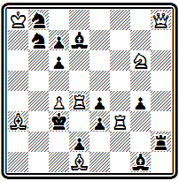
Мат в 3 хода
Оригинальность первого хода 1. Kf 4 в том, что сначала белые сами закрывают нужную им линию, чтобы после 1... gf 2. Kd 3 ed полностью ее расчистить и осуществить мат с выключением черной ладьи 3. Л h4#. Этот мат неправильный, однако в том же главном варианте при ответе 2... Л: h 8 проходит правильный мат 3. С b 2 #. Для характеристики стиля Марина важно отметить, что он обязательно добивался в главной игре по крайней мере одного правильного мата.
История развития задачной композиции в Польше подробно изложена в книге М. Врубеля «Сто лет польской шахматной композиции» (52). Первая задача польского автора была опубликована в 1855 г. Однако только к концу века польская композиция получает достаточное развитие. Появляются шахматные издания, организуются конкурсы составления задач, приходят первые успехи.
Наиболее известными польскими проблемистами конца XIX века были братья Эдуард и Вацлав Потемпские и Освальд Ярошинский (О. Ярош). Проиллюстрируем их творчество, развивавшееся в направлении, близком к чешской школе.
В позиции № 000 три варианта:
№ 000
Э. Потемпский «Курьер варшавски», 1893 г.
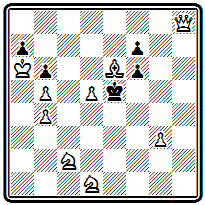
Мат в 3 хода
1. Cf 5 Kp : f 5 2. Ф h 5+ Кре4 3. Kf 2#; 1... Кр: d 5 2. Ф: f 6 Крс4 3. Ф: f 7 # ; 1... Kpd 6 2. Ф b 8 + Кр: d 5 2. Kde 3 #. Все они проходят в результате цугцванга и заканчиваются правильными матами.
В задаче № 000 первый ход
№ 000
В. Потемпский «Тыгодник иллюстрованны», 1897 г. I приз ( исправление )
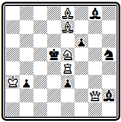
Мат в 3 хода
1. Cf 8 создает угрозу 2. Л:е3+ Кре6 3. Cd 7 #. Защиты конем приводят к двум вариантам с тихими ходами и правильными матами: 1 ... Kg 3 2. К c6 К:е4 3. Ф :g8# и 1... Kf 4 2. Kg 4 К: g 2 3. К: f 6 # .
Наконец, в примере № 000 только два варианта, но в обоих получаются правильные маты двойным шахом:
№ 000
О. Ярош «Тыгодник шаховы», 1899 г.
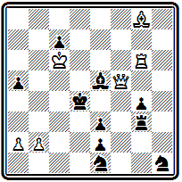
Мат в 3 хода
1. Ch7 ~ 2. Ф f7 Kpd3 3. Л d 6# и 1... Л f 3 2. Фе4+ Кр:е4 3. Л: g 4 # . Задача имеет побочное решение - 1. Лg7! (2. Лd7+ Cd6 3. Фd5#) . Требуется исправление задачи.
Глава 11
ЗАДАЧНАЯ КОМПОЗИЦИЯ В США
Первые американские конкурсы. Кук. Чини. Сборник «Американские шахматные орешки».
Лойд. Его творческие взгляды и книга «Шахматная стратегия».
Шинкман. Двухходовая задача в США
Рассказать о задачной композиции в США относительно легче, чем об эволюции ее в других странах. В 1942 г. вышла обобщающая работа по истории шахматной задачи в США (53), аналогичной которой нет ни в Англии, ни в Германии, ни во Франции. В этой двухтомной книге обстоятельно, в живой форме рассказано о всем пути развития американской задачи и лучших ее представителях.
Начало шахматной композиции в США совпадает с зарождением американской шахматной прессы. Ранние задачи появились в первом шахматном отделе, возникшем в 1845 г. при нью-йоркском издании «Спирит оф таймс».
Попытки издания шахматных журналов, предпринятые в гг., оказались неудачными, но «Чесс мансли», основанный в 1857 г., просуществовал пять лет.
Это время — середина 50-х годов — было порой значительного подъема шахмат в США, захватившего и область композиции. Подъем этот был непосредственно связан с триумфом П. Морфи. В 1857 г. в связи с международной выставкой в Нью-Йорке был созван I Американский шахматный конгресс. К этому событию был приурочен и первый в Америке международный конкурс составления задач. За год до того состоялись ранние национальные конкурсы составления задач, в которых дебютировал и первенствовал Лойд. В дальнейшем такие конкурсы, организуемые отделами периодических изданий, стали проводиться регулярно — до начала гражданской войны (1861 r,)t когда в шахматной жизни США наступил застой.
Задача № 000 принадлежит одному из видных американских композиторов того времени Т. Брауну,
№ 000
Т. Браун «Нью-Йорк клиппер», 1859 г. I приз
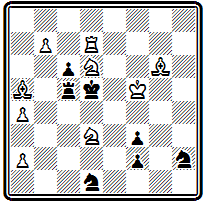
Мат в 3 хода
Вступительный ход 1. Kpg 5, подготавливающий ответ на имеющимся в начальном положении шах 1… Kpd 4+ предоставляет черному королю второе свободное поле и допускает новый шах 1… Кре6+. В ответ на оба шаха следует 2. Kf 5(+) с правильным матом в случае 2... Кр: d 7 3. К:с5#. Интересен дополнительный вариант 1… Л:а5 2. К b 5+ Крс4 3. Cf 7# с критическим ходом черной ладьи и ее последующим перекрытием белым конем.
Яркой фигурой начального периода американской композиции был молодой талантливый проблемист Д. Чини. Он занимался составлением задач всего пять лет — в 1861 г. Чини погиб на фронте гражданской войны, но тем не менее оставил в композиции значительный след. Задачи Чини отличаются по тому времени легкостью построения и интересной, четко выраженной стратегической идеей. По стилю они близки к задачам Эрлена.
В примере № 000 осуществлена идея, которая в дальнейшем получила название темы Чини — Лойда. Она относится к категории идей, порожденных «индийской задачей».
№ 000
Д. Чини «Бруклин стандарт», 1860 г.
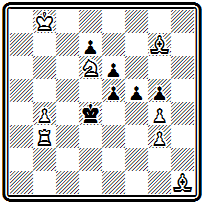
Мат в 3 хода
В ней мы находим и критический ход белой фигуры, и выключение этой фигуры на критическом поле, в результате которого получается распатование черных, но, в отличие от индийской темы, выключенная белая фигура дальнейшего участия в игре не принимает, мат дается другой фигурой. Первый ход 1. Са8 перебрасывает слона через критическое поле b7, на котором он после хода 1… fg, ставящего черных в положение пата, выключается белым королем 2. Кр b 7. Черный король получает выход 2... Kpd 5, но теперь у белых нет мата Андерсена, как в «индийской задаче», а следует мат ладьей 3. Л d 3#. На 1… f 4 решает 2. Се4.
Эта же идея была представлена Лойдом в следующей его задаче -
С. Лойд «Кливленд лидер», 1876
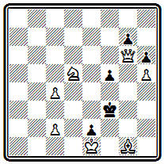
Мат в 3 хода
1. Ca7 f4 2. Кb6, 1... Крe4 2. Фg3.
В задаче № 000
№ 000
Д. Чини «Сэрка», 1859 г.
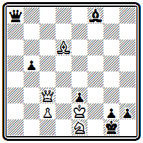
Мат в 3 хода
белые ходом 1. Ф h 8, создающим угрозу 2. Ф: h 2#, заставляют черных превращать пешку 1... h 1Ф. Теперь они могут использовать блокирование поля h1 эффектным маневром 2. Фа1, после которого неизбежен мат 3 . Kf 3.
Очень оригинальна комбинация, осуществленная в позиции № 000.
№ 000
Д. Чини «Американские шахматные орешки», 1868г.
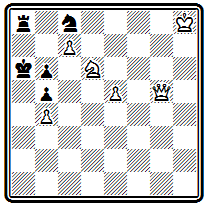
Мат в 3 хода
Белые могут легко заматовать черных по вертикали «а». Но … черные сами грозят шахом по восьмой горизонтали. Поэтому белые должны стремиться к заветной вертикали, одновременно защищая собственного короля: 1. Ф g 8 — шахов нет, а грозит мат 2. Фа2 #. Черные могут защищаться, связывая белого ферзя уходом коня. Однако на 1… К: d 6( e 7) следует 2. Ф:а8#. Черные предупреждают это и играют 1... Ка7. После 2. Ф:а8 черным пат, но неожиданное 2. Ф b 8 создает позицию цугцванга. На 2… Ке6 проходит мат 3. с8Ф#, поскольку белый ферзь перекрыл ладью. Конь может парировать эту возможность, играя 2... Кс8, но тогда ладью перекрывает черный конь, ферзь оказывается развязанным и дает мат 3. Ф b 7#. Наконец, на взятие белого ферзя ладьей следует мат с превращением пешки в коня 2… Л: b 8+ 3. с b К # .
Пионером в разработке темы превращения пешки в легкие фигуры был другой видный американский композитор Ю. Кук.
Задача № 000 служит примером ранних работ в этой области.
№ 000
Ю. Кук «Иллюстрейтид лондон ньюс», 1855 г.
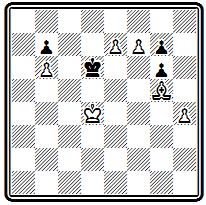
Мат в 3 хода
Решение ее несложно, но остроумно: 1. e 8 C Кре6 2. f 8 C Kpf 5 3. Cd 7 #.
Приведем еще один пример из творчества Кука (№ 000), где он развивает индийскую тему, представляя ее в двух вариантах.
№ 000
Ю. Кук «Американские шахматные орешки», 1868г.
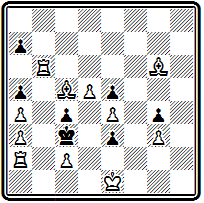
Мат в 4 хода
В разветвлении 1. Л f 6 а 6 2. Са7 е2 3. Л b 6 белый слон делает критический ход по диагонали а7-g1 в одном направлении, а при 1… е2 2. Cg 1 а6 3. Л f 2— в другом. В обоих вариантах черному королю предоставляется выход на поле d4, после чего белая ладья вскрывает мат слоном и отнимает одновременно поле c3, играя соответственно 4. Л b3# или 4. Л f 3 # .
Кук был весьма продуктивным композитором и активным шахматным деятелем. Он явился одним из инициаторов издания первого сборника задач американских авторов. Уже в 1859 г. Кук совместно с Лойдом подготовил коллекцию из 1000 задач. Однако осуществить издание удалось только в 1868 г., зато объем сборника увеличился больше чем вдвое. В сборнике «Американские шахматные орешки» (54) представлен 231 композитор. Задачи ведущей группы проблемистов того времени занимают свыше половины сборника. На первом месте С. Лойд — 353 произведения, далее Ю. Кук—326. Т. Браун — 229, Д. Чини—П — 84, К. Джилберг— 75, Д. Карпентер—64.
Знаменитый Сэмюэль Лойд не имел себе равных в американской композиции не только по числу представленных в сборнике задач, не только по исключительной продуктивности, но и по самому характеру своего творчества, по богатству и неисчерпаемому многообразию оригинальных замыслов.
Лойд начал составлять задачи в 1855 г. четырнадцатилетним юношей и развился в выдающегося композитора так быстро, что уже в 1857 г., когда стал выходить журнал «Чесс мансли». его пригласили редактировать отдел композиции. Лойд первенствовал на большинстве американских конкурсов, а в Нью-Йоркском конкурсе 1857 г. занял III место.
Успехи Лойда в последующих международных конкурсах невелики, да он и не особенно стремился в них участвовать. Лойд понимал, что его стиль решительно разнился от стиля ведущих европейских мастеров. Задачи американского проблемиста никак не соответствовали нормам и вкусам, господствовавшим в то время и разделявшимся судьями конкурсов. Если построить по годам кривую количества составленных Лойдом задач, то она будет иметь несколько пиков, соответствующих периодам подъема его активности. Первый пик относится к годам 1857—1859, когда он составил больше четверти всех своих задач, второй — к 1867—1868 и третий — к 1877—1878 гг. В дальнейшем активность его падает, хотя с несколькими задачами в год он продолжает выступать почти непрерывно до самой смерти, последовавшей в 1911 г.
Главная особенность творчества Лойда заключалась в том, что он чуть ли не в каждой задаче старался воплотить новую, оригинальную идею, был неутомим в изыскании все новых и новых замыслов и никогда не становился на путь повторения и шаблона. Его главным девизом всегда была оригинальность.
Уже в задачах, относящихся к раннему периоду творчества Лойда, мы находим большое количество ярких, разнообразных мыслей.
Вот позиция № 000
№ 280
С. Лойд «Сэтерди курир», 1855 г.
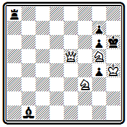
Мат в 3 хода
Белый ферзь должен освободить поле коню для создания угрозы 2. Ке5 и 3. Ке f 7 (: g 4) #. Однако от одной этой угрозы черные могут защищаться совместными усилиями ладьи и слона. Надо создать дополнительную угрозу, а заодно привязать черную ладью к восьмой горизонтали. Белые играют 1. Ф b 8 и создают угрозу 2. Kf 7+ При взятии ферзя 1 ... Л: b 8 проходит 2. Ке5, ибо черные потеряли теми. Ход ладьи с точки зрения координации сил для защиты был бесполезным. Ход 1... С f 5 защищает от 2. Ке5 (2... Се6), но проходит вторая угроза 2. Kf 7+ Kph 7 3. K 3 g 5#. На 1... gf проходит третья угроза 2. Ф: a 8 с неизбежным 3. Фh8#. Но это не все. У черных находится ответ 1... Са2, который защищает сразу от всех трех угроз. Что же делать белым — ведь других нападений нет. Оказывается, черный слон создал в своем лагере слабость, которую можно использовать. У ладьи отнято поле а2, и, пользуясь этим, белые красивым ходом ферзя в обратном направлении 2. Ф b 2 создают неотразимую угрозу мата королевской батареей 3. Kpg 3. Предельная экономия материала, активность всех фигур, включая короля, при очень скрытой и тонкой идее в главном варианте производят сильное впечатление.
То же можно сказать о задаче № 000.
№ 281
С. Лойд «Сэтерди курир», 1856 г. I приз
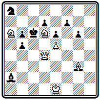
Мат в 4 хода
Белый ферзь на боевой позиции рядом с черным королем. Уводить его отсюда как будто бесцельно, надо подтягивать силы и вводить в бой слона. Это, действительно, так, но к цели ведет лишь 1. Ф g 1. Только этот нелепый, на первый взгляд, ход. лишающий ферзя всех преимуществ начальной позиции, решает задачу. Ферзь должен отступить, чтобы открыть путь слону, который затем проделает тот же путь в обратном направлении. Как бы черные ни играли, они бессильны воспрепятствовать этому плану: 2. С f 2, 3. С: b 6, 4. Фс5 #. Композиция Лойда воплощает ту же тему Тертона, что и приведенная выше задача № 66, с той лишь разницей, что там слабая фигура освобождала путь более сильной, здесь же наоборот— сильная фигура, ферзь, пропускает вперед себя слона. Такая разновидность темы была названа темой Лойда — Тертона. Следует отметить, что Лойд составил свою композицию независимо от Тертона, да и опубликовал ее лишь на месяц позже.
Композиция № 000, по признанию самого Лойда.— случайная находка.
№ 282
С. Лойд «Чесс Мансли», 1857 г. I приз
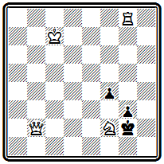
Мат в 3 хода
Между тем это одно из его самых известных произведении. В миниатюрной форме осуществлены четыре варианта с интересной разнообразной игрой. Пусть первым ходом объявляется шах 1. Kg 4+, Лойд этого не боялся и не считал слабостью задачи, зато в дальнейшем игра развивается очень тонко. На 1... Kph 1 белые жертвуют ферзя 2. Ф h 2+ и дают правильный мат: 2... gh 3. Kf 2#. На 1 ... Кр b3 следует тихая жертва коня 2. Kh 2 с угрозой 3. Л h 8# и далеким матом ферзем после 2... gh 3. Ф h 8#. При 1… Кр f 3 черные попадают в положение цугцванга после 2. Фс2; единственный ответ 2... g 2 блокирует поле у короля, и ферзь дает мат 3. Ф d 3#. Наконец, в случае 1... Кр f 1 решает далекий маневр ладьи 2. Ла8 с неизбежным 3. Ла1 #. Снова легкое, необычайно экономичное построение с богатейшим комплексом разветвлений.
Задача № 000 — снова в другом стиле.
№ 000